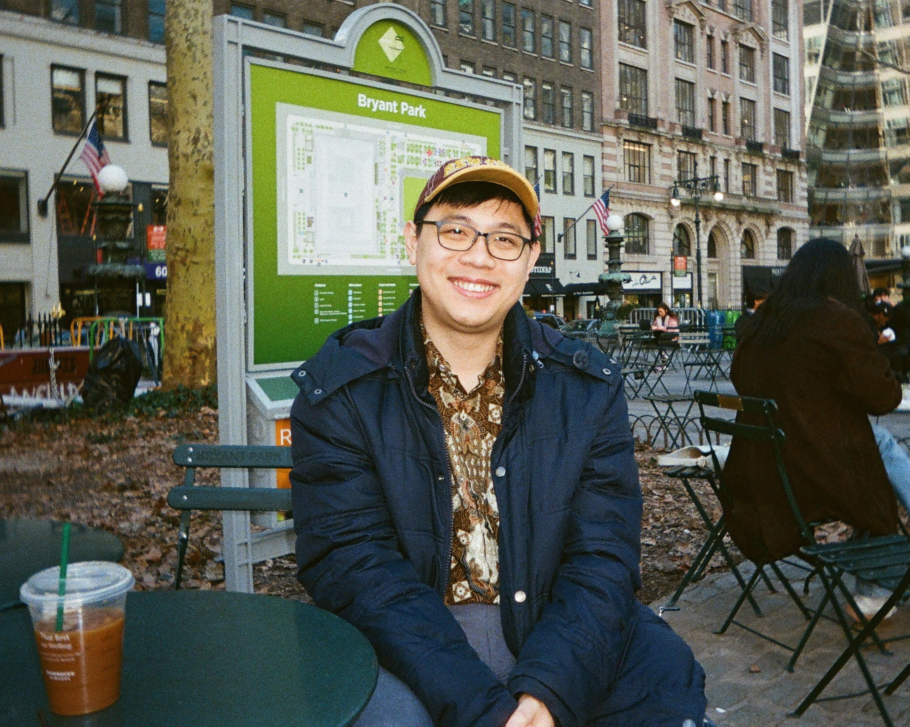

PhD Student in Philosophy · New York University

About
I am a PhD student in the Department of Philosophy at New York University. I am also currently affiliated with Nanyang Technological University under the HIPS scheme.
I work in the intersection of philosophy of language, aesthetics, and metaphysics. I am particularly interested in the philosophy of fiction and in modal semantics. I'm currently thinking about how genre conventions interact with conditional reasoning in fictive discourse.
Before NYU, I completed a B.A. (Hons.) and an M.A. in philosophy at the National University of Singapore. You can reach me at eugene.ho@nyu.edu.
Research
Curriculum Vitae
Education
Affiliations